1. AI Agent의 정의
YABOAZ에서 AI Agent는 사람을 대체하는 자동화 로봇이 아닙니다. 특정 업무 목적을 위해 Evidence, 온톨로지, 데이터, 규칙, 워크플로를 활용하여 판단을 지원하고 실행을 준비하는 디지털 업무 구성원입니다.
AI Agent는 “답변하는 AI”가 아니라 “업무 안에서 역할을 수행하는 AI 실행 단위”입니다.
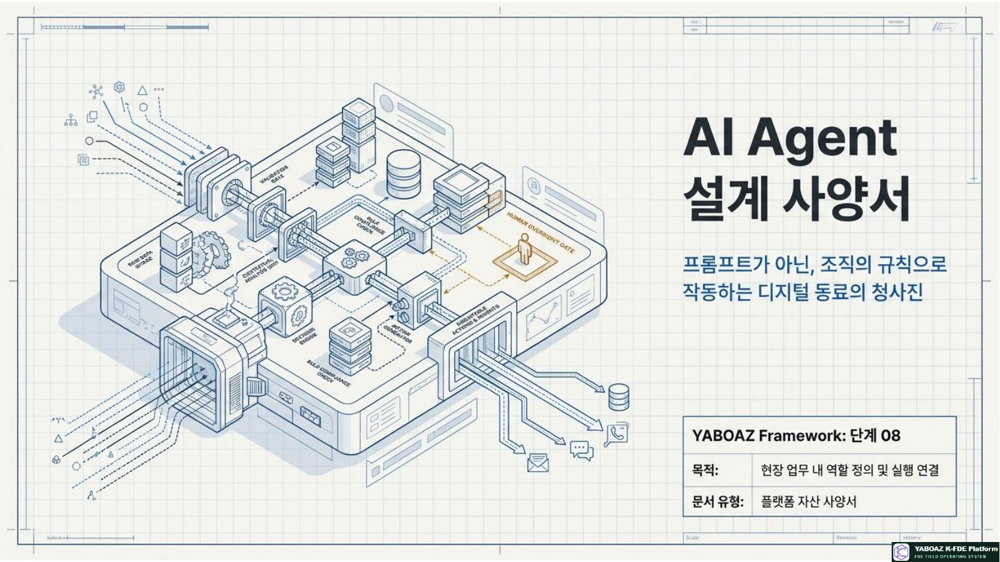
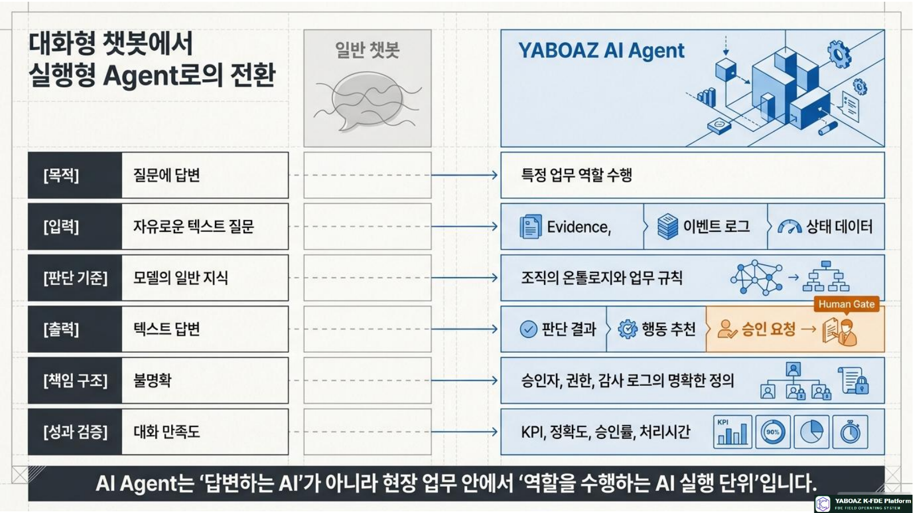
2. 일반 챗봇과 AI Agent의 차이
| 구분 | 일반 챗봇 | YABOAZ AI Agent |
|---|---|---|
| 목적 | 질문에 답변 | 특정 업무 역할 수행 |
| 입력 | 사용자의 자유 질문 | Evidence·데이터·상태·이벤트 |
| 기준 | 모델의 일반 지식 | 온톨로지·조직 규칙·정책 |
| 출력 | 텍스트 답변 | 판단·추천·승인 요청·기록 |
| 실행 | 워크플로와 약하게 연결 | 도구·API·Human Gate와 연결 |
| 책임 | 승인·권한 구조가 불명확 | 권한·승인자·금지 행동·감사 로그 명확 |
| 검증 | 대화 만족도 중심 | 정확도·채택률·처리시간·KPI |
| 자산화 | 재사용 사양이 부족 | Agent Spec과 템플릿으로 재사용 |
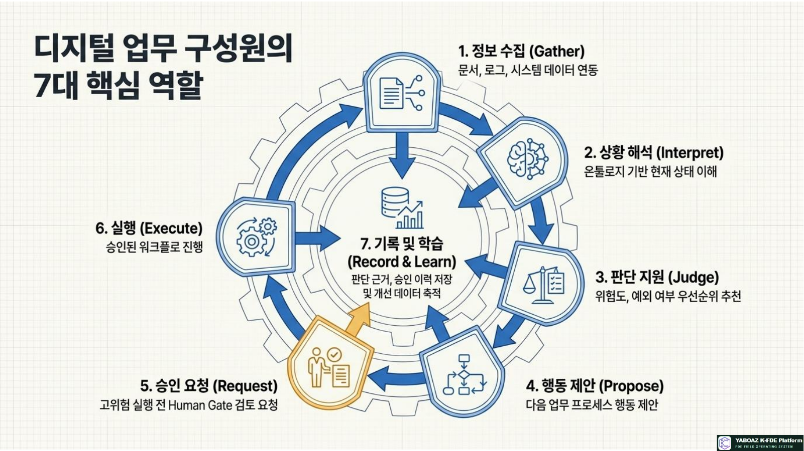
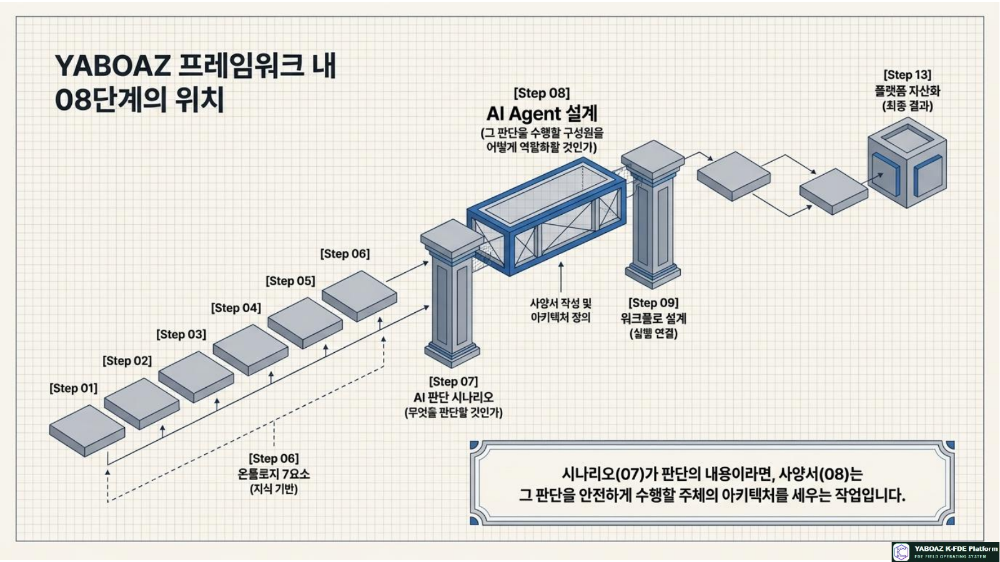
3. 08단계의 위치와 핵심 산출물
입력 자료
| 입력 | Agent 설계에서의 활용 |
|---|---|
| 문제정의서·현장 탐색·인터뷰 | Agent가 해결할 업무와 실제 사용자 흐름을 확인합니다. |
| Evidence·온톨로지 7요소 | 판단 근거, 객체·상태·이벤트·규칙·행동을 연결합니다. |
| AI 판단 시나리오 | Agent가 수행할 질문과 출력 결과를 정의합니다. |
| 데이터·API·보안 정책 | 읽을 데이터, 사용할 도구, 권한·금지 범위를 결정합니다. |
핵심 산출물
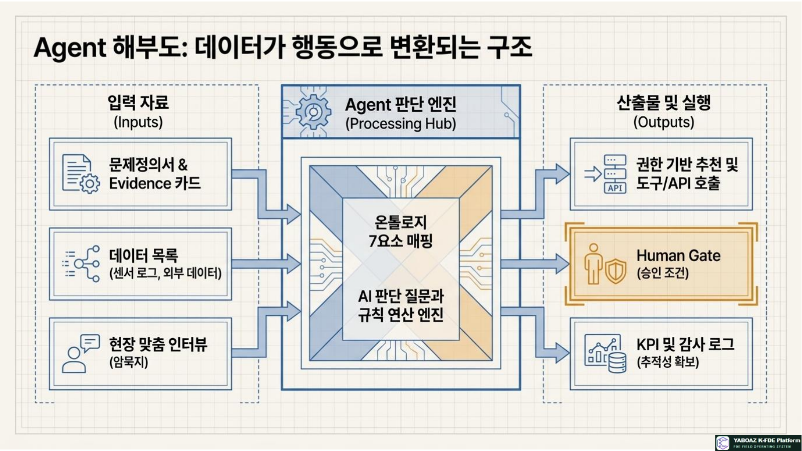
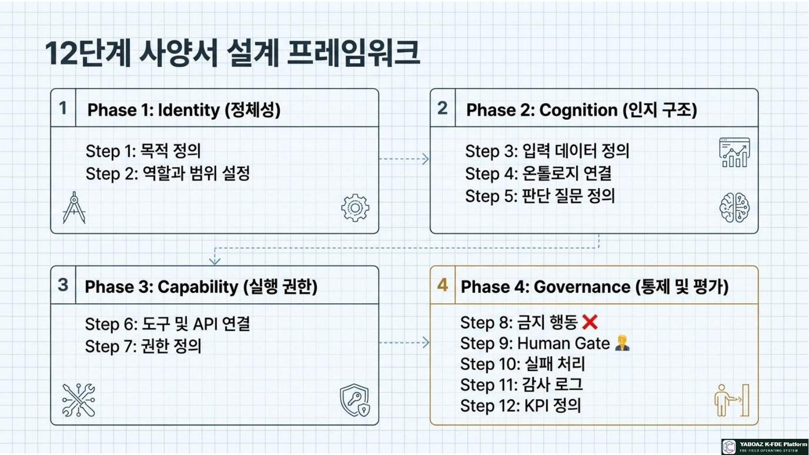
4. AI Agent 설계 전체 흐름 10단계
Agent 목적 정의
해결 문제, 반복성, 기대 효과, 실패 위험, MVP 범위를 명확히 합니다.
역할과 업무 범위 설정
주요 역할·보조 역할·수행 범위·수행하지 않는 역할을 분리합니다.
입력 데이터 정의
Evidence, 객체·상태·이벤트, 규칙·이력, 사용자 입력과 갱신 조건을 지정합니다.
참조 지식·온톨로지 연결
도메인 용어집, 온톨로지, 매뉴얼, 판단·금지 규칙, 과거 사례를 연결합니다.
판단 질문·출력 정의
판단 결과·추천 행동·근거·신뢰도·대안·리스크·승인 필요 여부를 설계합니다.
도구와 API 정의
검색·데이터 조회·상태 업데이트·알림·승인 요청·리포트·KPI 도구를 등록합니다.
권한 정의
Read, Recommend, Request, Draft, 승인 후 실행, 제한적 자동 실행으로 구분합니다.
금지 행동·Human Gate 연결
AI 단독 실행 금지 영역과 사람 승인 조건을 연결합니다.
실패 처리·감사 로그 설계
데이터 부족, 충돌, API 오류, 권한 부족, 실행 실패와 기록 항목을 정의합니다.
KPI·자산화 기준 정의
정확도·채택률·처리시간·오류율과 다른 프로젝트 재사용 조건을 정합니다.
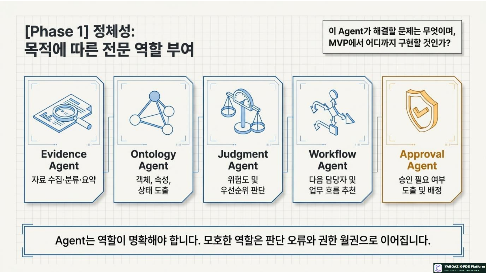
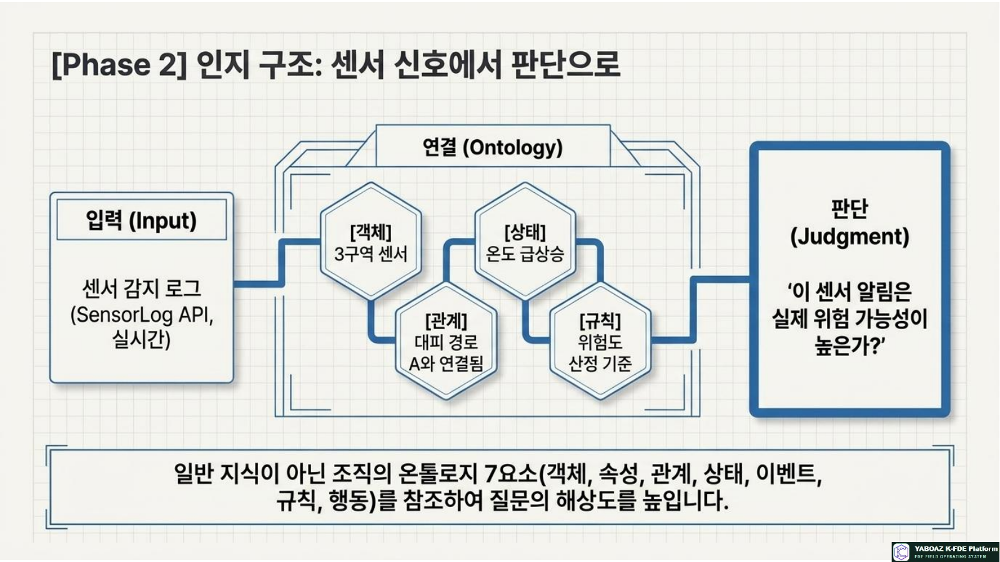
5. Agent 역할·입력·참조 지식
Agent 역할 유형
입력 데이터 정의표
| 데이터 | 출처 | 필수 | 갱신 | 품질 조건 |
|---|---|---|---|---|
| 센서 감지 로그 | 센서 시스템 | 필수 | 실시간 | 시각·위치 포함 |
| 센서-구역 매핑 | 시설 DB | 필수 | 변경 시 | 최신 공간 정보 |
| 주변 센서 상태 | 센서 시스템 | 필수 | 실시간 | 누락 없음 |
| 오경보 이력 | 이력 DB | 선택 | 월 단위 | 최근 12개월 |
| 관리자 확인 메모 | 사용자 입력 | 선택 | 수시 | 작성자·시각 기록 |
온톨로지 연결
| Agent 기능 | 참조 요소 | 판단 연결 |
|---|---|---|
| 센서 알림 해석 | 센서·구역·상태·이벤트 | 현재 상황과 발생 원인 |
| 위험도 판단 | 센서 상태·구역 위험도·규칙 | 정상·주의·위험 추천 |
| 경로 영향 확인 | 구역-경로 관계·경로 상태 | 안전·차단·대체 경로 |
| 승인 필요 여부 | 위험도·행동·승인 규칙 | Human Gate 분기 |
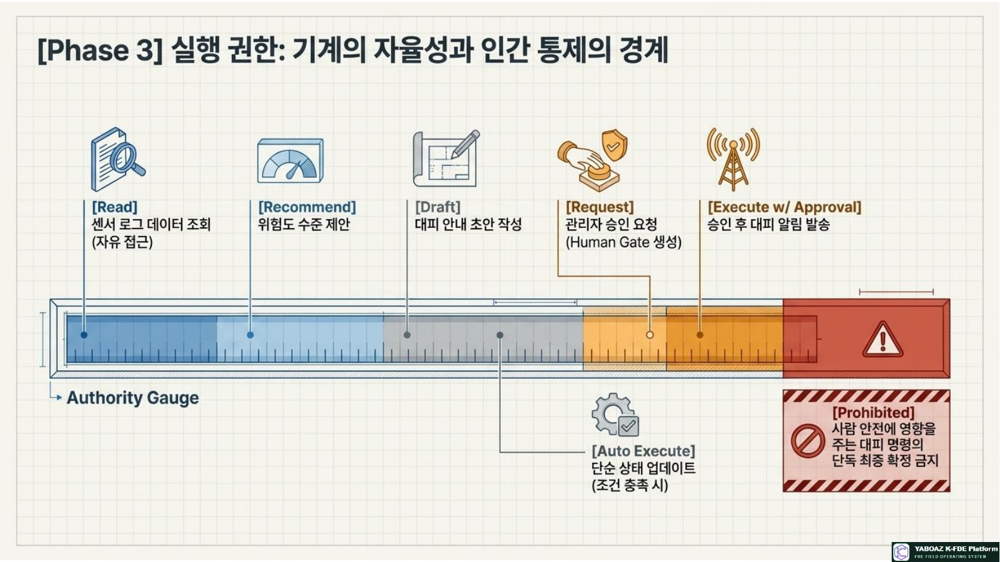
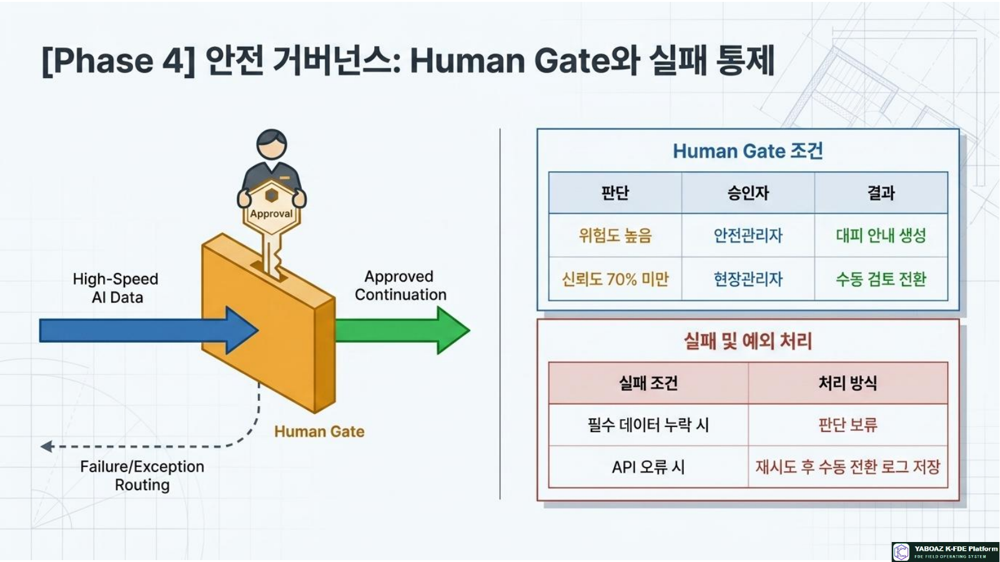
6. 도구·API·권한·금지 행동
도구/API 정의표
| 도구/API | 용도 | 입력 | 출력 | 권한 |
|---|---|---|---|---|
| SensorLog API | 센서 상태 조회 | 센서ID·시간 | 센서값·상태 | Read |
| SpaceMap API | 구역·경로 조회 | 구역ID | 위치·연결 경로 | Read |
| Approval API | 승인 요청 생성 | 추천·승인자 | 요청 ID | Request |
| Notification API | 승인 후 알림 | 대상·메시지 | 발송 결과 | 승인 후 실행 |
| AuditLog API | 판단·승인·실행 기록 | 실행 정보 | 로그 ID | Write |
권한 수준
| 수준 | 허용 내용 | FireNavi 예시 |
|---|---|---|
| Read | 데이터·Evidence 조회 | 센서 로그 확인 |
| Recommend | 판단 결과·행동 추천 | 위험도·경로 추천 |
| Request / Draft | 승인 요청·문서 초안 작성 | 관리자 승인 요청 |
| Execute with Approval | 사람 승인 후 실행 | 대피 알림 발송 |
| Auto Execute | 낮은 위험 업무 자동 실행 | 감사 가능한 내부 태깅 |
| Prohibited | 수행 금지 | 대피 명령 최종 결정 |
본 Agent는 위험도 추천과 승인 요청을 수행할 수 있으나, 관리자 승인 없이 대피 안내를 발송하거나 대피 명령을 최종 확정할 수 없습니다.
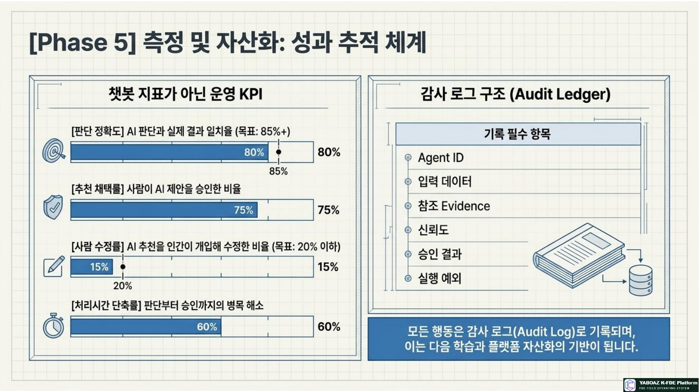
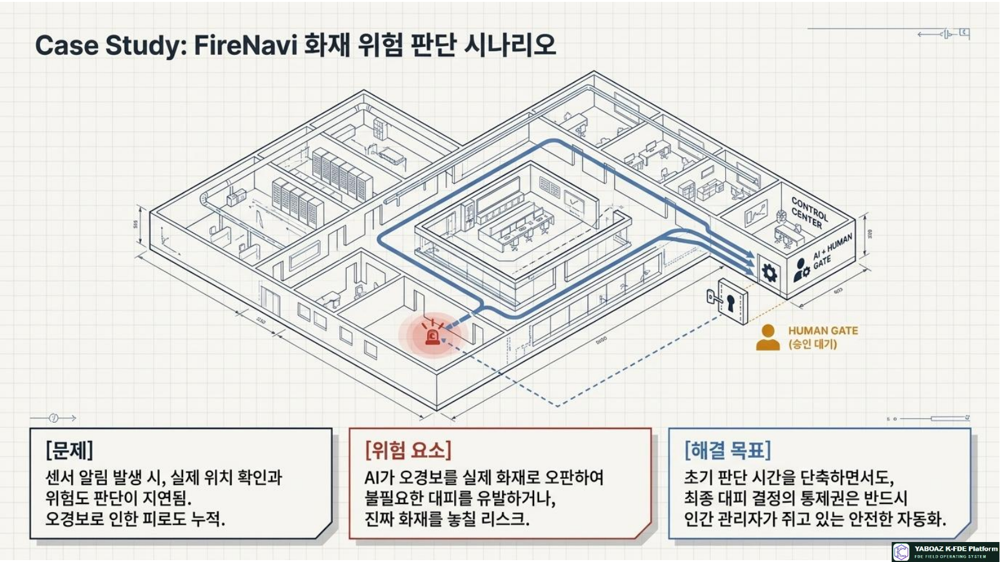
7. Human Gate·실패 처리·감사 로그
Human Gate 연결표
| Agent 판단 | Gate 조건 | 승인자 | 승인 후 행동 |
|---|---|---|---|
| 위험도 높음 | 대피 안내 필요 | 안전관리자 | 대피 안내 생성·발송 |
| 경로 차단 필요 | 경로 사용 불가 | 시설관리자 | 경로 제외·재추천 |
| 우선 대상 있음 | 취약자 정보 포함 | 안전담당자 | 개별 알림 |
| 신뢰도 낮음 | 70% 미만 | 현장관리자 | 수동 검토 |
실패 처리표
| 실패 유형 | Agent 행동 | 사람 개입 | 기록 |
|---|---|---|---|
| 필수 데이터 누락 | 판단 보류 | 담당자 확인 요청 | 누락 데이터 |
| 데이터 충돌 | 충돌 표시 | 승인자 판단 요청 | 충돌·결정 로그 |
| API 오류 | 재시도 후 중단 | 수동 처리 전환 | 오류·복구 로그 |
| 권한 부족 | 접근 차단 | 권한 관리자 요청 | 권한 이벤트 |
| 실행 실패 | 롤백 또는 중단 | 운영자 확인 | 실행 결과·롤백 |
감사 로그 필수 항목
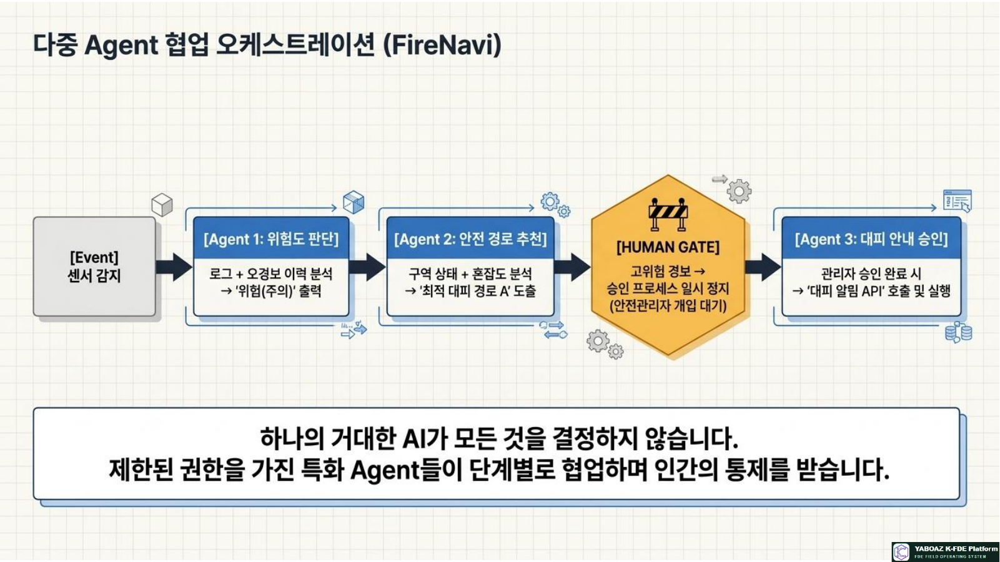
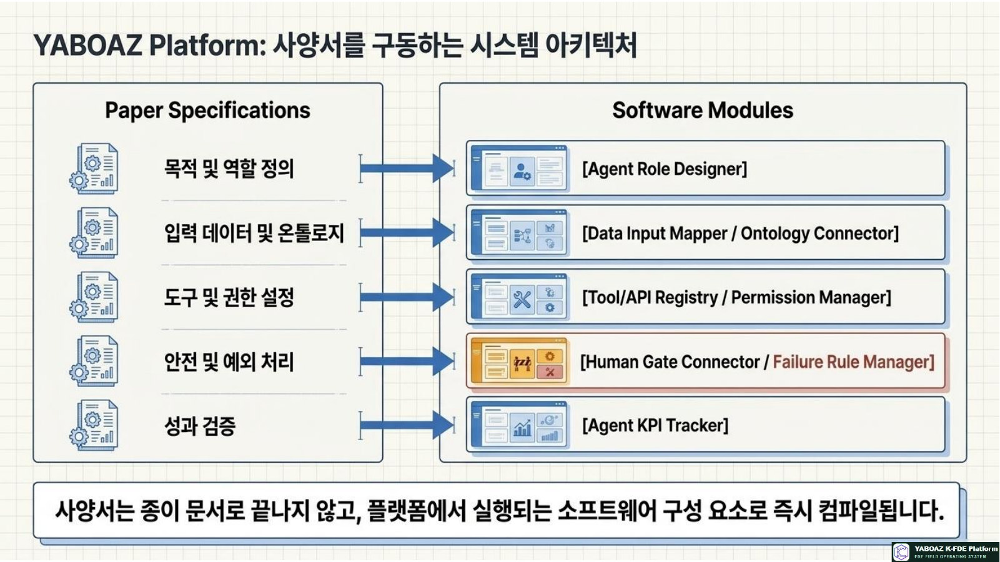
8. FireNavi 적용·실습·완료 기준
Agent 1. 위험도 판단 Agent
| 항목 | 내용 |
|---|---|
| 목적 | 센서 알림 발생 시 실제 위험 가능성 판단 |
| 입력·지식 | 센서값·위치·주변 센서·오경보 이력·센서·구역·상태·이벤트 |
| 출력·행동 | 정상·주의·위험, 근거·신뢰도, 위험 이상이면 승인 요청 |
| 권한·금지 | Recommend·Request / 대피 명령 단독 확정 금지 |
| KPI | 판단 정확도·승인시간·오경보 감소율 |
Agent 2. 안전 경로 추천 Agent
| 항목 | 내용 |
|---|---|
| 목적 | 대피자 위치 기준 안전 경로와 대체 경로 추천 |
| 입력 | 대피자 위치·구역 위험도·경로 상태·혼잡도 |
| 규칙 | 위험 구역과 연결된 경로 제외, 혼잡도 낮은 경로 우선 |
| Human Gate | 대피 안내 전 안전관리자 승인 |
| KPI | 경로 정확도·대피 완료율·사용자 수정률 |
Agent 간 협업
Agent 사양서 표준 항목
08단계 완료 체크리스트
AI 판단 시나리오를 재사용 가능한 Agent 역할로 전환하고, 도구·권한·승인·실패 처리·감사 로그·KPI를 함께 설계하여 안전한 업무 구성요소로 만드는 것입니다.
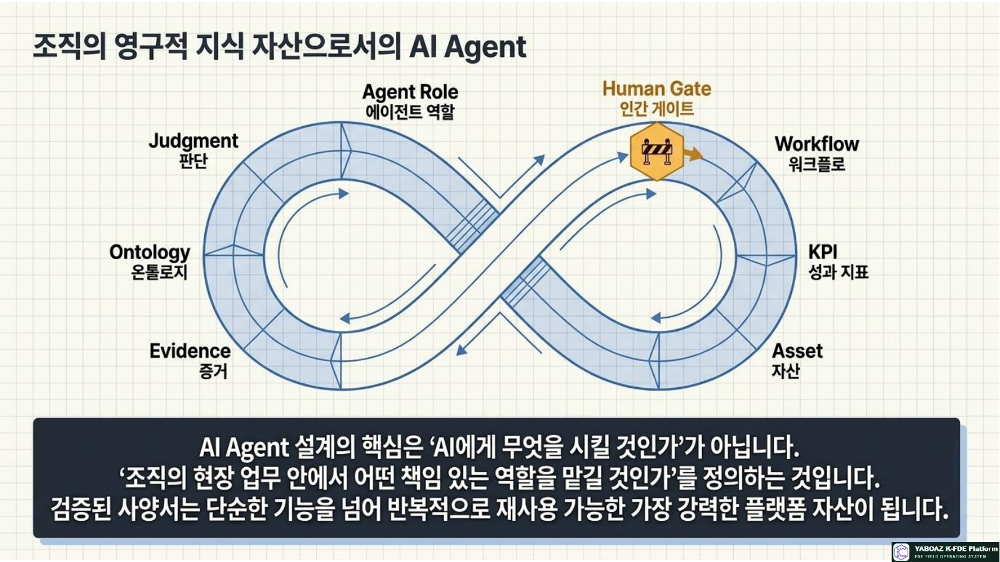